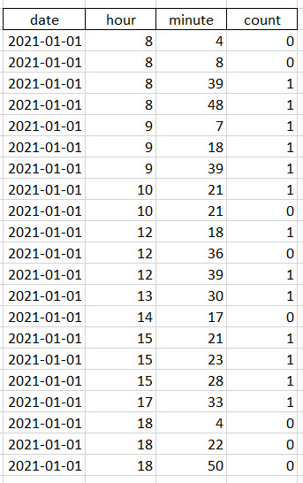
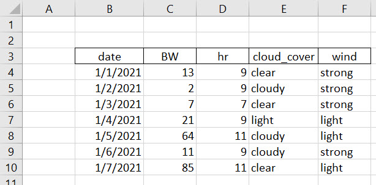
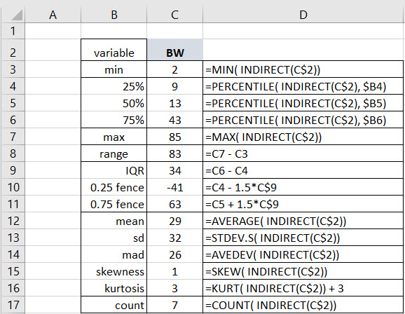
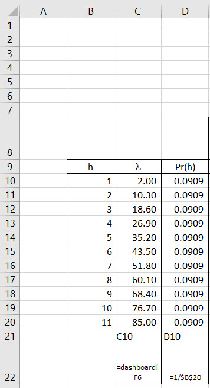
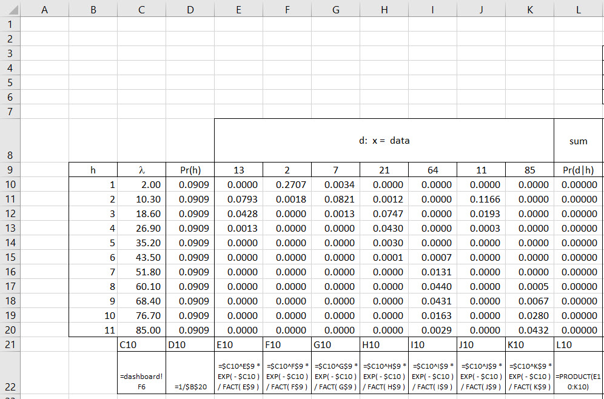
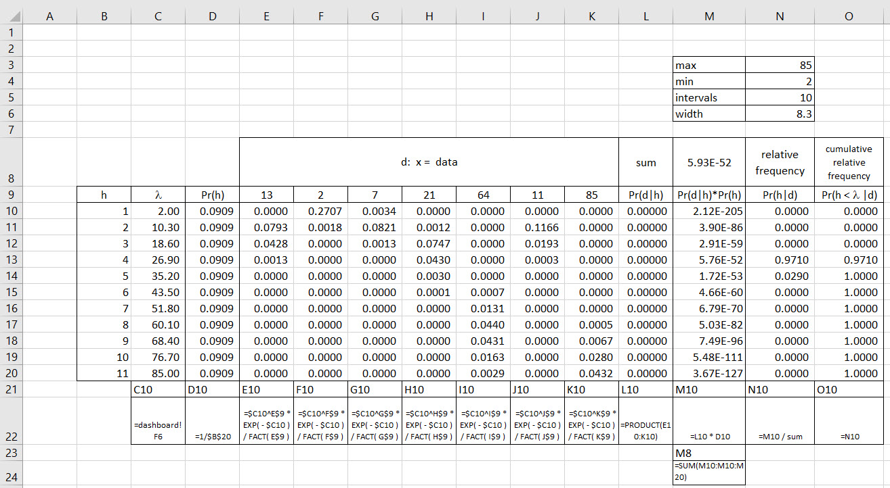
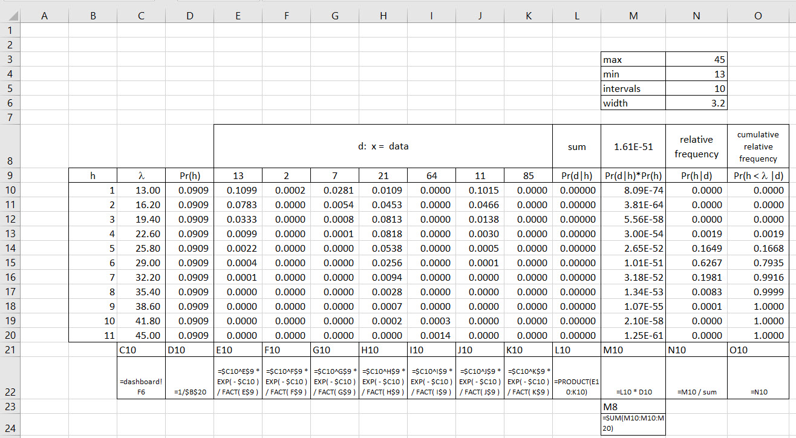
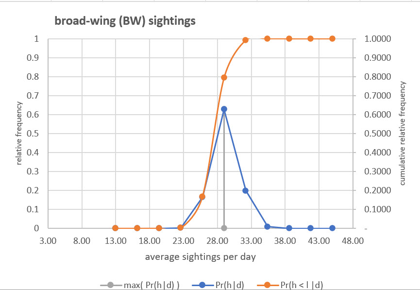
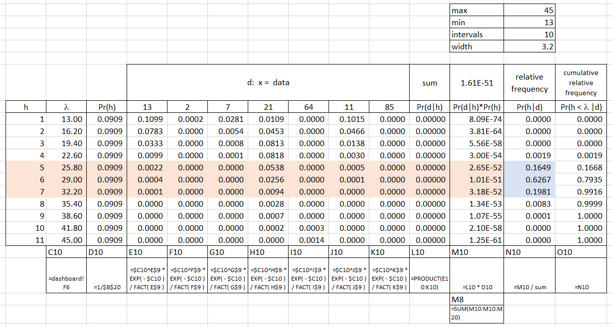

Chapter 5 Algorithmics 3: playing musical raptors
5.1 Is there more to life than binary?
Yes indeed! Let’s motivate ourselves with an example. We suppose that we observe raptors (birds we usually call hawks) off the Heldeberg Escarpment (42°39′21″N 74°01′09″W) southwest of Albany, NY in the John Boyd Thacher State Park. The raptor census helps us understand the health of the local environment. More raptors means more prey, and more ecological support for all concerned, including clean water and air. During 5 consecutive days we observe individual sightings or not. We want a record of the timestamp when we don’t observe raptors as well, at least for time checks. Here is a sample of one day’s observations.

When we sum the count column we calculate 13 raptor sightings. There are some curious aspects to this data collection effort. The non-sightings, coded as 0’s, seem to occur at nearly random times during the day. Also the 11’th hour is missing. Why? The observer did not record all the non-sightings because of a directive from her supervisor, just some time checks during the day. At 10:35AM the supervisor directed the observer to help the team set up a new observation blind. The observer did not return until 12:05PM. Were there raptors to be sighted during the 11’th hour? We will never know. What about the other minutes without mention of a sighting? Logic should dictate that those minutes would receive a 0 code since we might assume that the 1’s are reliably counted. And that is just the data collection phase! The 11’th hour absence-with-leave would constitute an instance of measurement error.
We just reduced binary 1’s and 0’s to the field of integers. We have a broad wing (BW) raptor counts for each of seven days along with the number of observational hours, cloud cover, and wind conditions.

The hours are integer as are the BW counts. The weather conditions are binary data. We pose this question.
In weekly January intervals, what number of raptors can we expect to see?
First, and foremost, we conceive, think about, conjecture whether we might see anywhere from nearly 0 to nearly 100 raptors per day according to this very sparse data set. Our next step will describe the data.
5.2 Exploring what we do know
Common sense would dictate that seeing 85 raptors does not seem very likely. Is it an outlier? Perhaps it lies outsider of a normal range of raptor sightings. But what is a normal range? We have not yet discussed a criterion to identify what is or is not an outlier. An operational definition ought at least to be based on observed data, experience with raptors and the local environment, and notions of rare, outlying, events. Also at the least a description and identification of an outlier should provide a strong enough contrast with those sightings that are not outliers. As always common sense will help us.
We then set up a range of measures to describe the raptor data. Here is a panel of metrics that relate to the location of a tendency of the data to accumulate around a value, as well as the scale or range of the data that might deviate from a tendency, a trend, an expectation. We could also describe two shape metrics: one for skewness to measure preponderance of positive or negative deviations from trend; another for the thickness of the tail of the distribution of sightings. An important analytical task is to map the time series of sightings into a frequency distribution of the sightings.
5.2.1 Summarize the data
We can aggregate the data into useful summaries that cover:
Location is the tendency of the data to a central, or perhaps, another non-central value. Examples are the mean, median (50%tile), and mode (most frequently occurring datum). But we should not forget that other quantiles (also known as percentiles) such as the 25th and 75th, might be interesting locations to visit. Location metrics are described extensively here.
**Scale* is the width of the data. The most obvious width is the distance in data dimensions (counts of birds here) from minimum to maximum known as the range. Other average distances include the standard deviation, mean absolute deviation, and interquartile range. Scale metrics are described extensively here.
Shape measures the direction of the mass of frequencies, also known as skew, as well as the thickness of the tails of a distribution. Skew looks at the preponderance of negative and positive deviations. It does so by addup the cube of deviations. Thus a positive deviation will cube to a positive number, a negative deviation will cube to negative score. We raise deviations to a fourth power to calculate kurtosis, the thickness of the tails. This is the same as squaring the square and thus we can interpret kurtosis as akin to the standard deviation of the standard deviation. Shape metrics are described extensively here.
Now we go to the calculation table.

The first rule of spreadsheet engineering practice is to name ranges. Here we look at the vector of data named BW. We use the indirect(named_range) function to access values of the named range throughout this installment of Algorithmics. Mean and standard deviation (sd) are the usual suspects. Included also in the average absolute value of deviations of data from the mean, known as the Mean Absolute Deviation (mad). Skewness, kurtosis, and the count of data round out the summary.
Are there any outliers? Tukey’s fences can help us answer this question. As we can see in the cell formulae for C10 and C11, there is are lower (C10) and upper (C11) bounds or thresholds defined by 1.5 times the Interquartile Range (IQR). The IQR is a scale metric which is the difference between the 25th and 75th percentile. This range represents 50% of the data. We look for 1.5 times the IQT below the 25th percentile and 1.5 times the IQR above the 75th percentile for outlying data. We will discover in the next Algorithmics installment how to interpret the choice of the 1.5 threshold.
So, no there are no outliers below the 25th percentile threshold as there are no counts of raptors that are negative, and by definition, the minimum count is far greater than the lower threshold. But there are outliers above the 75th percentile threshold as the max is greater than the upper threshold. Certainly values of greater than the threshold and less then or equal to the maximum number of sightings.
We will use values from this table to begin to set out a grid to approximate \(Pr(h \mid d)\). So what are our hypotheses? They will derive from a distribution that can use the integer sightings data we generated. This distribution is the Poisson distribution to which we now turn our rapt attention.
5.3 Whence the binomial generates the Poisson
Suppose we have 20 raptor sightings per 9 hour observational day. This means 20/9 = 2.22 raptors let their presence be known to us per hour. If we model a success as a sighting we can calculate the probability of a sighting by hour using the binomial process. This means that most of the hours get zero sightings but some hours will get exactly 1 visit. However we observe that in some hours, and maybe minutes too, there are more than 1 visitor.
The problem with the binomial approach is that it can not envisage more than one event in any unit of time or space. But suppose we then divide 1 hour into 60 minutes, and thus make the time unit smaller, say, the 60 minutes in an hour? Now 1 hour can contain multiple sightings. But our problem remains: any one minute will contain exactly one or no sightings. This gives us a clue as to how we might solve the problem of calculating the probability of multiple sightings in an hour.
Furthermore it is possible that there are more than one sighting in even a minute. So then we divide the minute further into 60 seconds to begin to account for this set of events. It is even possible that more than one raptor sightings at the escarpment in a second, and so on. We divide the unit of time into smaller and smaller intervals.
We can coerce the binomial process to handle multiple events by dividing a unit time into smaller units. By using smaller time intervals, we can make the original unit time contain more than one event. Mathematically, this means that \(n\), the number of trials, experiments, or observations approaches a very large number: \(n \rightarrow \infty\). But the number of events in the binomial process is \(np\), so as \(n\) gets big, then for any positive probability of a single success \(p\), \(np\) will explode. To handle this we let \(p \rightarrow 0\) as \(n \rightarrow \infty\).
Since we assume the rate of sightings per hour is fixed because otherwise, \(np\), which is the number of events, will blow up. Using the limit, the unit times are now infinitesimal. We no longer have to worry about more than one event occurring within the same unit time. And this is how we can derive the Poisson distribution.
In the binomial distribution, the number of trials \(n\) should be known before hand. If you use the binomial, you cannot calculate the success probability only with the rate (i.e. 17 raptors/day, or hour, or week). You need more information: both \(n\) and \(p\).
The Poisson Distribution, on the other hand, doesn’t require us to know \(n\) or \(p\). We are assuming \(n\) is very large relative to \(p\). The Poisson distribution uses the intensity rate \(\lambda\) which collapses \(np\) into a single parameter. In practical applications we usually only know this intensity rate.
Let’s start with the binomial probability distribution with \(X\) the population of sightings and \(x\) one instance of the number of sightings sampled from the population.
\[ P(X = x) = {n \choose x} p^x (1-p)^{n-x} \]
Next we exploit the definition of \(\lambda = np\) to calculate \(p\).
\[ p = \frac{\lambda}{n} \] We insert this rendition of \(p\) into the binomial formula, and let \(n\) get ever larger, so that in the limit we have
\[ P(X = x) = lim_{n \rightarrow \infty} {n \choose x} \left(\frac{\lambda}{n}\right)^x \left(1-\left(\frac{\lambda}{n}\right)\right)^{n-x} \] Splitting up the \((1-p)^{n-x}\) term we see that
\[ P(X = x) = lim_{n \rightarrow \infty} {n \choose x} \left(\frac{\lambda}{n}\right)^x \left(1-\left(\frac{\lambda}{n}\right)\right)^{n} \left(1-\left(\frac{\lambda}{n}\right)\right)^{-x} \]
It turns out that we have this amazing simplication.
\[ lim_{n \rightarrow \infty} \left(1-\left(\frac{\lambda}{n}\right)\right)^{n} = e^{-\lambda} \]
Embedded here is the very definition of \(e^{-\lambda}\) embedded in Jacob Bernoulli’s discovery of the transcendental number \(e\).
As \(p = \lambda/n\) gets very small with \(n\) getting very large for relatively increasingly very small \(x\), then this term approaches 1.
\[ lim_{n \rightarrow \infty}\left(1-\left(\frac{\lambda}{n}\right)\right)^{-x} = 1 \]
Finally, we can use this notion to think through the idea that \({n \choose x}\) also approaches 1.
\[ \begin{align} {n \choose x}\left(\frac{\lambda}{n}\right)^x &= \frac{n!}{(n-x)! \, x!}\left(\frac{\lambda}{n}\right)^x \\ &= \frac{n!}{(n-x)! \, x!}\left(\frac{\lambda^x}{n^x}\right) \\ &= \frac{n!}{(n-x)! \, n^x}\left(\frac{\lambda^x}{x!}\right) \end{align} \]
But, \[ \begin{align} lim_{n \rightarrow \infty} {n \choose x} &= lim_{n \rightarrow \infty} \frac{n!}{(n-x)! \, \, n^x} \\ &= lim_{n \rightarrow \infty} \frac {n(n-1)(n-2) \dots (n-x+1)}{nn \dots n} \\ &= 1 \end{align} \] Again, we can use an amazing simplification. There are \(x\) terms in both the numerator and denominator. The numerator is ever only slightly smaller than the denominator when \(n\) is very large and the ratio of the two terms will converge eventually to equal each other since \(n\) is collosally greater than \(x\).
Finally, when we assemble it all together what is left is the Poisson probability. We illustrate with \(x=21\) and \(\lambda=18.60\).
\[ \begin{align} Pr(X = x \mid \lambda) &= e^{-\lambda}\left(\frac{\lambda^x}{x!}\right) \\ &= e^{-18.60}\left(\frac{18.60^{21}}{21!}\right) \\ &= 0.0747 \end{align} \]
The first term in the exponent \(e\) is the probability that none of the \(n\) samples of data occur at rate \(\lambda\), that is, \(Pr(X=0 \mid \lambda)\). The second term are the number of ways the probability that \(x\) sightings occur at rate \(\lambda\). We have found our hypotheses finally. The only unobserved data in this probability statement reside in \(\lambda\).
5.4 Approximating Poisson
We use all of the algorithmic practice learned in building a binomial model to generate \(Pr( h=\lambda \mid d=integer \,\, counts)\). First we build a grid of \(\lambda\)s. We start with the minimum and maximum from our study of the data and decide on how many nodes and thus intervals (nodes minus one). The first node is the minimum. The next nodes are incremented by the interval width. The last node should check out to be the maximum of the grid generator. We use equally likely \(Pr(h)\) for each hypothesized \(\lambda\).

Now we compute the probabilities of seeing each and everyone of the separate sightings counts in I9:K9 given each and every hypothesis for \(\lambda\) in C10:C20. We of course use the hard fought for Poisson probability formula. We have a table of conditional Poisson probabilities to take in.

The transpose (column for row) of the BW named range feeds each column of Poisson probabilities, one sighting datum = \(x_i\) for \(i=1 \cdots 7\) in the sample, and one \(\lambda_j\) for \(j=1 to 11\) hypotheses. So we compute in cell E10, holding the row absolute for the data and the column absolute for the hypothesis, the following formula. We illustrate with \(x_4=21\) and \(\lambda_3 = 18.60\).
\[ \begin{align} Pr(X = x_4 \mid \lambda_3) &= e^{-\lambda_4}\left(\frac{\lambda_3^{x_1}}{x_4!}\right) \\ &= e^{-18.60}\left(\frac{18.60^{21}}{21!}\right) \\ &= 0.0747 \end{align} \]
Now we have all of the calculations we need to feed the calculation of the conditional probability \(Pr(h | d)\). The goal continues to be to depict, using sampled, observed data, the uncertainty associated with possible answers to the question: what is the intensity of raptor sightings?

We highlight the example computation of a conditional data probability. Our focus now is the relative frequency column.
For each hypothesized \(\lambda_j\) we next aggregate all of the Poisson conditional probabilities for all of the observed data \(x_i\). Since we observe both \(x_1=13\) and \(x_2=3\) and so on to \(x_7=85\) we calculate the conditional probability that we observe all of the data by multiplying the individual conditional data probabilities in column L. This number is often very small!
In column M we multiply the conditional data probability \(Pr(d \mid h)\) by the probability that the hypothesis \(Pr(h)\) occurs. The result is the numerator of Bayes Theorem. We then sum up the eleven \(Pr(d \mid h)Pr(h)\) to yield the denominator \(Pr(d)\) in Bayes Theorem in cell M8. Column N yields the fruit of our labor. We calculate the ratio of \(Pr(h \mid d )Pr(h)\) to \(Pr(d)\) to finally get \(Pr(h \mid d)\). The maximum probability of a hypothesis given data is 0.97 and this finding points to \(\lambda=26.90\) expected raptor sightings per day.
5.5 Zooming in for a closer look
We notice that there is a high concentration of plausibility around \(\lambda=26.90\). We can zoom into the range of \(\lambda\)s around 26.90 to investigate the uncertainty associated with our best point estimate. If we set the maximum \(\lambda=45\) and the minimum \(\lambda= 13\) we get this new set of calculations.
 A plot will be more helpful.

We see a strong peak at about 28. We need to remember that this is yet another grid approximation to the development of hypothesized \(\lambda\) and their conditional probabilities. Nearly all of the probability around 28 ranges from 23 to 33 sightings per day, that is, \(28 \pm 5\) sightings.
5.6 Probability intervals
The cumulative relative frequency, also known more affectionately as the ogive curve, provides our entree to the world of making useful probability statements about the uncertainty of our hypotheses. Here is an example of a useful interrogative statement.
We know there is error in measuring raptor sightings. What range of raptor sightings might we expect 99% of the time?
This statement is useful because we have a concern about measurement error. It might also be useful if the consumer of the analysis requires an answer.
Let us look at a range of hypothetical average sightings about the average sighting that is most plausible. Here is a concentrated range of hypotheses from a minimum of 13 per day to a maximum of 45 per day on a 11 node grid.

We shade the range about the most plausible aaverge sightings perday \(\lambda=29.00\) at a highest plausibility \(Pr( h \mid d)=0.6967\). we search for the roughly equally dispersed range about this best hypothesis and find we only need to go down one and up one hypothesis. We find that the answer to the question is that about sightings on average per day occur between about 25 and 32 per day with 99% plausiblity.
How do we get this calculation? The sum of the shaded \(Pr(h \mid d)\) equals about 0.9897, close enough to the required level. We can also use the ogive, cumulative relative frequency of \(Pr( h< (\lambda = 32.20) \mid d)= 0.9916\) and subtract \(Pr( h< (\lambda = 22.60) \mid d)= 0.0019\) to get the same answer, 0.9897. We notice we have to step down one hypothesis to \(\lambda=22.60\)$ to subtract the correct accumulated probability.
We can also use an even finer grid to get a more precise answer, should our analysis, that is, the consumer of the analysis, require this extra time and expense.
5.7 References and endnotes
Further information and more examples using the Poisson distribution can be found here.
More detail with examples for outliers including Tukey’s 1.5 outlier fences can be found here.